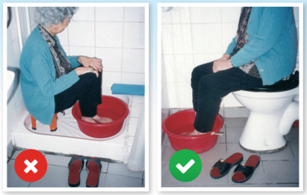

居住環境
房屋改善建議
拆掉地板墊，粉刷台階的邊緣，減少眩光
安裝手柄
改善照明
安裝安全警報器，以便在發生事故時可以尋求幫助。
提防環境陷阱
清除地面危機
保持地面乾爽，避免打蠟。
清理地面上的水和油漬。
確保地面平坦，修補凹凸不平的地板。
使用顏色鮮豔的油漆或膠紙標記門檻位置，防止絆倒。
保持通道暢通
維持通道暢通，電線要沿著牆邊收好。
移走地面上的雜物、垃圾及鬆脫的地毯等。
選擇合適的家具設施
⭕ 宜選擇高度合適，坐著時雙腳能平放地上的椅子，最好有扶手以助站起來。
⭕ 選擇穩固的椅子，家具的高度也要適中及靠牆擺放。
❌ 避免坐梳化、矮凳或摺椅。
❌ 更不應坐有輪或不穩的椅子。
充足照明
確保室內光線充足，走廊可安裝通道夜明燈或床頭燈，以彌補夜間光線不足。
防跌措施
移走地布，改用防滑地毯。
浴室地面要鋪防滑磚、浴缸內加上防滑貼及於適當位置安裝扶手。
活動須知
輕鬆做家務
不要高估自己的反應能力及速度，並經常提高警覺，慎防身體失去平衡。
體弱的長者宜用簡單及節省體力的方法完成家務，以減輕體力的消耗。例如：坐着燙衫、坐著預備餸菜等。
避免要求自己在短時間內完成大量的工作。例如：歲晚大掃除應分開數天進行。
安排交替進行輕鬆及粗重的家務，讓身體有片刻休息，以免體力透支，容易跌倒。
手洗衣服宜坐在合適高度的椅上，把整盆衣服放在座廁上手洗（如下圖），避免踎低或彎腰等不良姿勢。
抹地時避免赤腳或踏著地布抹地，因為這樣會較易跌倒。
應穿著鞋子，並用長柄地拖把抹地 （如下圖）。多應用長柄工具掃地、抹塵，避免爬高或身軀俯前，以便維持腰背的正確弧度及避免失去平衡。
外出購物時避免攜帶大量物品，可使用購物車載物（如下圖），減少對身體關節的負荷。
安全自我照顧技巧
穿著褲子、鞋襪時，應使用配合自己平衡能力的方法，如先坐下穿好褲管， 才站立抽褲 （如下圖）。
如小便頻密，應作身體檢查。在睡前調節飲水分量，有助減少夜間上廁所時跌倒的風險。
避免坐矮凳或站着洗澡。長者宜坐着洗澡、抹乾身體及穿著衣物（如下圖）。 
衣履選擇
腳和鞋類
鞋類會影響平衡和跌倒的風險。
⚠️高跟鞋已被證明會增加老年人的跌倒率。
防滑鞋裝置（如下圖）可有效減少在濕滑條件下的戶外跌落。
在家中和室外都應穿低跟鞋或有結實防滑鞋底的鞋。
確保鞋帶綁妥。
時常留意鞋底是否已磨至光滑、避免外出時穿拖鞋或在室內只穿襪行走。
選擇鞋底採用較硬及防滑物料的鞋，尺碼要合適。
配合合適的鞋墊，加強腳部穩定性。
可考慮有「方便鞋」設計的鞋子，因它採用特別的設計，例如彈性鞋帶、拉鍊或魔術貼等，這些設計可以簡化穿脫鞋子的步驟，減低跌倒的風險。
衣物
衣物要稱身。
衣物不宜太闊或太長，以免絆倒。
款式要易於穿脫。
善用輔助器具
起居器具
行動不便的人士，經治療師評估能力、生活需要等因素後，可選擇合適的輔助器具。
夜間如廁時，矇矓間容易因腳步不穩而跌倒，可考慮使用便壺或便椅（如下圖）。
適當使用輔助器具以增加沐浴的安全，例如使用沐浴椅。行動不便的長者，亦可以選用裝有輪子的沐浴椅，進出浴室即可更輕鬆安全。
助行器具
適當使用合適的助行器具，能改善長者的活動能力和預防跌倒。
為確保長者能正確選擇及使用適合的助行器具，宜先由物理治療師評估長者的活動能力、疾病、環境及體型等因素，經指導後才購買使用。
飲食指南
維生素D
維生素D可以增強肌肉，從而減少跌倒。薈萃分析表明，每天補充700至1000IU的維生素D可使老年人跌倒的風險降低19％。
除此之外，維生素D亦可以幫助腸道吸收鈣質。
皮膚受到陽光照射時，人體即可以合成維生素D。多做户外活動，包括日常在街上行走，讓臉、手臂、手部皮膚短暫接觸陽光。每星期兩至三次，讓陽光照射到臉部、手臂和手部皮膚5至15分鐘，便可維持體內的維生素D處於較高水平。
食用天然含有維生素D的食物，包括油脂較高的魚類（例如三文魚、沙甸魚、吞拿魚）、蛋黃、肝臟等。
市面上亦有添加了維生素D的食物，例如食物標籤註明加入維生素D的牛奶、奶製品、豆奶、果汁、早餐穀物等。
鈣質

人體內大部分鈣儲存如骨骼及牙齒中，餘下的鈣則存於血液中。而長期鈣質攝取不足，骨骼的鈣質就會不斷流失，骨骼因而變得疏鬆、脆弱，甚至容易折斷，增加跌倒風險。
根據衛生署建議，50歲或以上的成年人每天要攝取1000－1500毫克的鈣。
要達到建議攝取量，每天要食用一至兩份奶類或代替品。一份奶類等於一杯牛奶、一盒加鈣豆奶、一盒乳酪或兩片芝士。
除此之外，以及要多選則鈣質豐富的食物，其中包括深綠色蔬菜（例如：西蘭花、芥蘭）、連骨魚類（例如：魚乾、罐頭茄汁沙甸魚）、乾豆／豆製品（例如：黃豆、眉豆、硬豆腐）以及果仁（例如：芝麻、花生、腰果）
病理因素
視力矯正
由老花眼，白內障，黃斑變性或青光眼引起的視力差，深度知覺下降和對比敏感度是跌倒的危險因素。
接受白內障手術恢復視力可有效預防跌倒。
（有視力差的？）老年人應該配戴單鏡眼鏡，尤其是在進行戶外活動時。
使用多焦點鏡片可能會增加跌倒的風險，因為這種眼鏡會降低動員（？）時在較低視野中的對比敏感度和深度感知。
體位性低血壓
體位性低血壓在轉換體位時發生。
例如：由臥姿或坐姿轉為站姿。體位性低血壓會令患者出現頭暈目眩、視力模糊、四肢無力、甚至暈倒。
而體位性低血壓的風險因素包括服用口服抗高血壓藥物（包括：血管緊張素轉換酶抑制藥、血管緊張素II接受體拮抗藥、鈣拮抗藥、乙型(β)受體阻斷藥）、利尿劑（例如：氫氯噻嗪及吲達帕胺）、心絞痛藥物（例如：硝酸甘油）、柏金遜症藥物（例如：左旋多巴）等。
(資料來源：https://www.pharmaceutical-journal.com/cpd-and-learning/learning-article/new-approach-to-postural-hypotension-has-reduced-admissions-and-saved-cash/11103628.article?firstPass=false)
要預防體位性低血壓，長者要注意慢慢轉換姿勢，由仰臥至坐立，由坐立至站立，尤其於早晨時分，因為此時保持站立的耐力是最低的。
以下兩張圖為起身即起床時的姿勢轉換指南：
長者亦要保持身體有足夠水份，避免脫水，尤其於夏天，應避免長時間暴露於日光之下。同時，長者可穿著壓力襪或彈力襪。如藥物導致頭暈情況嚴重，建議和主診醫生商討轉換藥物。
小便失禁
有些長者因膀胱肌肉過敏，或泌尿道感染等原因而常有強烈尿意，或肌肉力量減弱不能忍尿。每每趕著如廁，心情緊張便會容易跌倒。
宜攝取足夠水分，養成良好的排尿習慣，並按醫生或物理治療師的指示，做盤骨底肌肉鍛鍊運動，以改善情況。
善用社區資源
自理及處理家務困難
長者如果經常感覺體力不支，覺得在自理及處理家務上十分吃力，甚至有跌倒風險，應該主動與家人商量，分擔家務。
亦可向社區服務機構申請上門服務，例如：送餐服務、家務助理、家居照顧服務等。
家人照顧困難
家人若偶然因事未能照顧長者，可申請暫托服務。
需康復治療者亦可申請日間護理中心。
有需要的長者可瀏覽社會福利署網頁。
獨居的高危長者
獨居或體弱的長者宜在家中安裝緊急召援系統 (俗稱救命鐘)。
經常參與戶外活動的長者，亦可考慮使用特別為長者設計的手機，其特色是有特大清晰的鍵盤和簡易按鈕，能接駁至有關服務管理機構，提供二十四小時緊急支援服務，為長者在戶外提供適時援助。